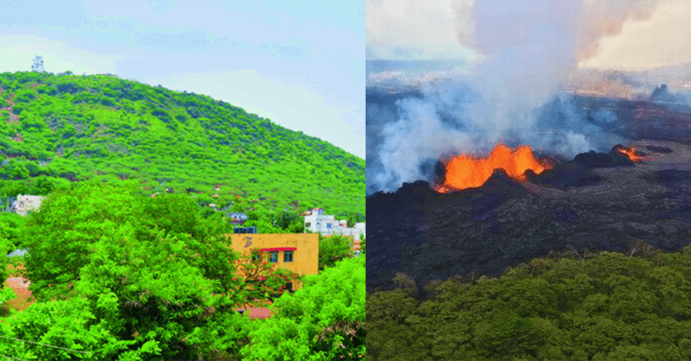

VijayawadaVolcano
Vijayawada is a city in the southeast Indian state of Andhra Pradesh. It's known for the ornate Kanaka Durga Temple, which sits atop a hill overlooking the city. The Undavalli Caves feature ancient rock-cut temples, carved out of a sandstone hillside and adorned with elaborate statues. The massive Prakasam Barrage stretches across the Krishna River. Nearby is Bhavani Island, with forests and waterfront gardens.
Mountain Lion
The mountain lion is a large cat of the subfamily Felinae. Native to the Americas, its range spans from the Canadian Yukon to the southern Andes in South America and is the most widespread of any large wild terrestrial mammal in the Western Hemisphere.
Mustard Yellow
Mustard is a dull/dark yellow color that resembles culinary mustard. It is similar to the color Flax. The first recorded use of mustard as a color name in English was in 1886.
Squash
Squash is a racket and ball sport played by two players in a four-walled court with a small, hollow rubber ball. ... The objective of the game is to hit the ball in such a way that the opponent is not able to play a valid return. There are about 20 million people who play squash regularly world-wide in over 185 countries.
- The Vijayawada folklore about the jaggery drinking dormant volcano is a fascinating tale
- Panakala Narasimha Swami has a tradition of pouring jaggery juice to keep the volcano from erupting.
- The locals believe that sugar or jaggery water neutralises the sulphur compounds in a volcano and prevents its eruption.
